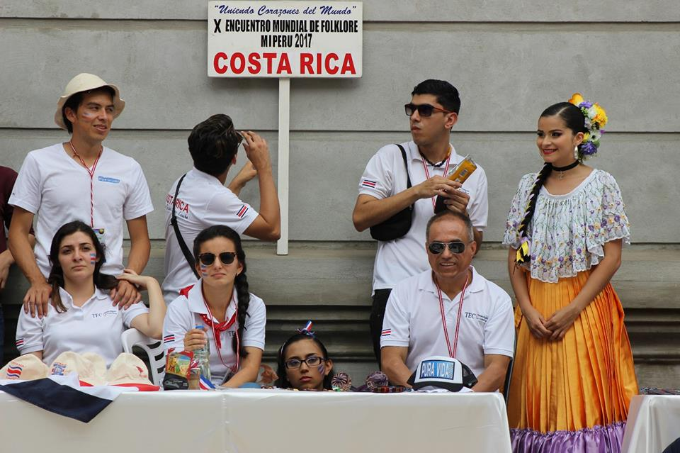
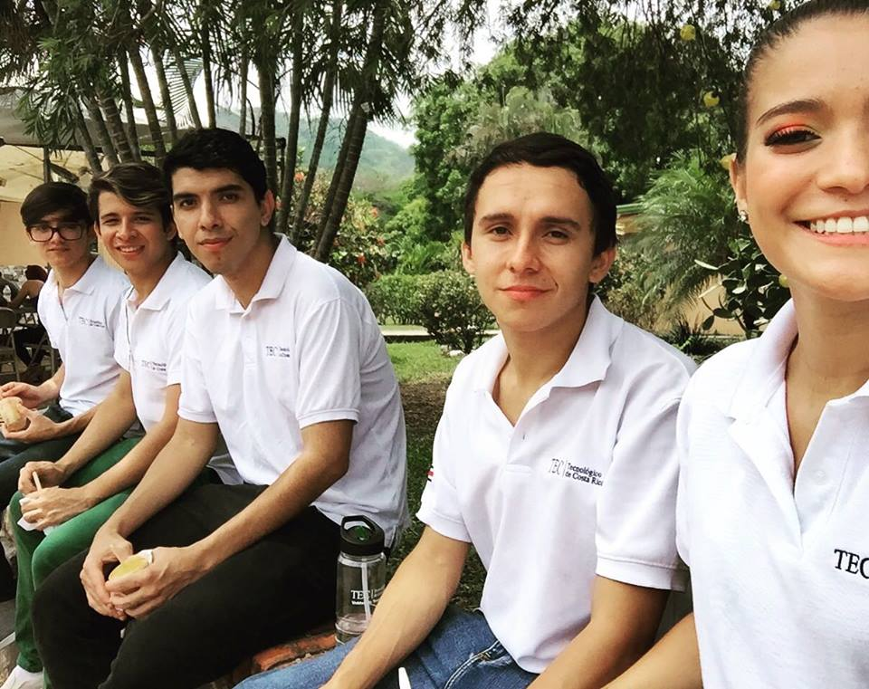
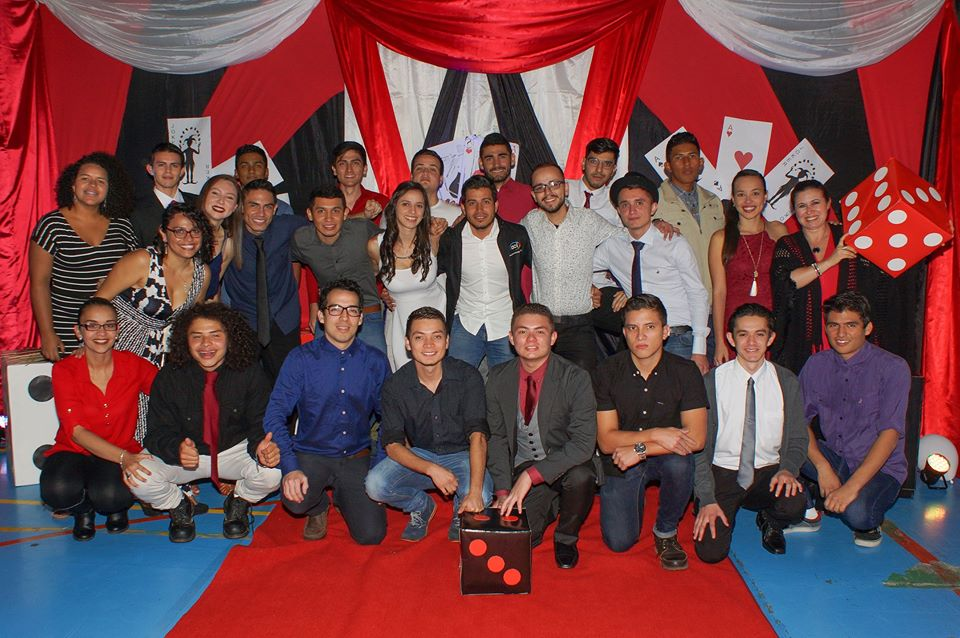

Cuando entré al kinder muy pequeño aun recuerdo, fué en el 2001 entré en el kinder de concepción de alajuelita pues en esos tiempos mi familia y yo viviamos ahí, recuerdo que había un patio grande y yo era feliz, inclusive mi madre iba a colaborar en la cocina con las demás madres, casi no recuerdo mucho ese lugar y no tengo fotos que me recuerden pero sé que me gustaba, para mitades de año, mi familia se mudó a la zona sur, donde es ahora nuestro hogar, y me cambiaron de kinder, al de la Escuela Juan Lara Alfaro, recuerdo que llegué hecho un pollo, pues extrañaba mucho mis amiguitos del otro kinder, los cuales no recuerdo, y mis compañeros del nuevo kinder algunos no me querian xD creo que ni la maestra pues solo pasaba regañandome jajaja, sé que yo era un diablillo en ese entonces, asi que no me duele jajaja, luego cuando ingresé a primer año todo bien pero en segundo recuerdo que era el demonio en persona jaja y la maestra a cada rato me ponia al frente de la clase para que me portara bien y yo con mas ganas hacia desorden jaja, ese año mi mamá me puso un "estatequieto" y ya me comportaba mas, ese año casi me quedo en segundo fué horrible jaja, y de ahí llegué hasta sexto y con la maestra mas tenebrosa en ese momento, la cuál ahora es muy amiga querida mia, y logré superar sexto, inclusive ese año fué 2007 que fué cuando quitaron los examenes para ir al colegio y yo super feliz, recuerdo que durante la primaria mia, yo no tuve nada de amigos inclusive siempre estaba aparte, y tambien recuerdo que solo con los profes me sentía a gusto hablando pues no me gustaba como los compañeros mios se comportaban, llegué a ser el sapo de la clase solo por el hecho de tener amistad con mis maestros


Cuando salí al colegio, yo quería ir a uno que quedaba cerca de la casa, y estaban mis primillos, pero mi mamá no me dió pelota jaja entonces me matriculó en uno privado, el Colegio Latino, que quedaba aun mas cerca, y yo de nuevo sin saber a donde iba, y dá la casualidad que me sucedía lo mismo de la escuela, no socializaba con nadie, inclusive recuerdo que nuestra clase era la peor del colegio, y cuando trataba de hablar con los profes para socializar la fama de mi sección hacia que no me hicieran caso y saliera regañado por ellos, eran como dos que si, entonces me iba para la dirección y me iba a acompañar a la secretaria mientras pasaban los recesos. Y así fué hasta octavo inclusive jaja, unieron mi sección con el otro grupo y entonces nadie se hablaba pues se caian mal todos xD solo yo ahi medio socializaba, inclusive habia una muchacha que me gustaba y todo el mundo sabia jaja creo que hasta ella, en ese entonces yo era un toque inocente para mi edad y mis compañeros aprovechaban eso, recuerdo que me pagaban para que yo les hiciera los trabajos y yo feliz, pues casi no me daban dinero y me gustaban los trabajos. y así pasé mi octavo, y resulta que para noveno me cambiaron de colegio y fuí a dar al Liceo la Uvita, pues a mi mamá la nombraron por ahí y tuvimos que ir ahi, solo ella y yo, los demas de la familia se quedaron en la frontera. Yo estaba asustado que me pasara lo mismo del kinder, pero fué completamente lo contrario, mis compañeros me dieron la bienvenida he inclusive me hablaban y nos reiamos juntos era mas un ambiente familiar, era demasiado divertido, inclusive ahi hice muy lindas amistades que aun mantengo, y tambien hubieron profesores que recuerdo eran muy buena nota y todo era muy lindo, hasta que mi mamá se enfermó y tuvo que ir sola de uvita hasta perez zeledon manejando con un posible ataque de cancer de ovarios y ahi fué donde me arrepentía tanto de no saber manejar, tanto que inclusive empezé a madurar mas, como solo vivia con mi mamá tuve que quedarme solo y así estuve durante un tiempo, yo mismo me hacia todo y mas que nada por eso soy como soy, esto fue hasta que una mamá de un compañero llamó a mi mamá y le ofreció que yo me quedara en la casa de ella mientras mi mamá se recuperaba y así fué fuí a la casa de un compañero como por tres meses, y ahi la pasaba bastante bien al menos ya no estaba solo. Ese año hice el examen para ingresar al Cientifico de Perez Zeledon el cual fallé.
Luego en el 2011 cuando ya estaba en cuarto me volvieron a trasladar a la zona sur, pero resultaba que el colegio donde estaba, ya lo habian cerrado pues la latina se queria dedicar solo a universidad, entonces me trasladaron al Liceo Finca Naranjo, ahí yo sabía que me iba a topar con compañeros que ya había tenido, pero iba con otra mentalidad pues gracias a mi experiencia en el Liceo la Uvita maduré demasiado y tuve mas valor y ahí fué cuando conocí a mi mejor amiga durante mi estancia en el colegio ahí seguía siendo inocente pero ella siempre me defendía y por eso a ella yo la aprecio demasiado y la quiero de una forma que no se puede explicar, en ese colegio estuve cuarto y quinto y ahí me gradué en el 2012 y hice amistades que quiero mucho y de ves en cuando nos vemos.


En el TEC ingresé en el 2013 en la carrera de ingeniería en computación y en cartago que para mí era el polo norte pues venía de una zona muy caliente, era un mundo totalmente nuevo y estaba muy emocionado hasta fuí a la bienvenida, y sin darme cuenta no fuí a la primera clase xD empezando una nueva experiencia que en definitiva es la mejor de todas, y la empecé mal jaja cuando me dí cuenta de eso casi me da algo.
Cuando ingresé estaba gordillo xD pesaba al rededor de 80 kilos, y cuando terminó mi primer semestre, terminé pesando 70 kilos jaja

Ahora ya estoy acostumbrado al masoquismo, parezco golpeado por la vida pero eso significa esfuerzo que he tenido que realizar para estar donde estoy ahora.

Actualmente solo me hacen falta cuatro cursos para poder realizar mi practica profesional y estoy muy orgulloso de mi mismo pues a pesar de muchas dificultades puedo estar aqui

Mis relacion con los profes de la carrera es increible hay unos que solo compas jaja pero tengo profesoras que han sido lo mejor que pudo haber pasado y inclusive las veo como mamá jaja y tambien las secretarias de la escuela, son unas increibles personas y realmente las amo demasiado y no las cambiaría por nada, a mis jefas tambien las quiero mucho pues en el ambiente laboral todo era muy divertido, lo que mas me gustaban de todas ellas es que siempre vasilabamos, me regañaban y me jalaban las orejas jaja pero lo mejor es que hice unas de mis mas agrandes amigas con ellas.
Recuerdo mucho cuando estaba estancado en la carrera con un curso y mi coordinadora me decía, mirá vos pasas este curso y vas volado en el plan jaja y dicho y hecho, pasé el curso y ahora estoy aqui muy feliz de ya casi salir, también las secres que me regañaban que le pusiera, la verdad es que gracias a todas ellas ya casi termino mi carrera y no hay suficiente para agredecerles a estas chicas.
Me acuerdo cuando me diagnosticaron dengue casi me dá el "sumenash", pero ellas me apoyaron mucho, y cuando recientemente pensé que tenía leucemia ellas fueron un gran soporte para mí, de verdad las quiero demasiado mis chiquillas.
luego de pasar unos años en la U, tuve el valor de ingresar al grupo folklorico del TEC en el cual, encontré a mis mejores amigos, los cuales siempre me han hecho reir yo los hago reir, nos ayudamos, entre otros. Inclusive me acuerdo cuando tuve dengue por segunda vez una de ellos me llevó hasta el hospital y me estuvo esperando hasta la madrugada, ahi me dí cuenta que de verdad al fin tenia amigos con los cuales contar despues de mis experiencias en la primaria y parte de la secundaria.
De mis primeros conciertos con el coro del tec
Salida con los del coro
Villancicos

Una de mis primeras presentaciones con Tierra y Cosecha
Primera fiesta que tuve, del programa de Residencias
Con mis mejores amigos de la vida xD
Gira a Perú



Mi segunda fiesta de residencias
Feria Vocacional con algunos conocidos y mis mamis xD
Gira a Francia
Ahora actualmente estoy llevando Introducción al Desarrollo de aplicaciones WEB en el periodo de verano y ha sido un poco rudo mas que nada porque la primera mitad del curso pasé completando un reporte acerca de lo que realizaba durante este año en mi trabajo y en la finalización de un algoritmo. Y uno de los trabajos del curso fué realizar un Blog acerca de lo que se veía en el curso para ayudar a personas que deseen ingresarse en este ambiente.
LINK: https://introprograweb.wordpress.com